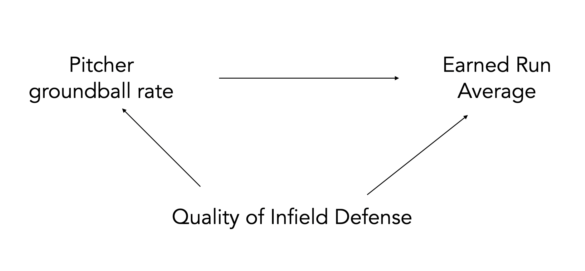
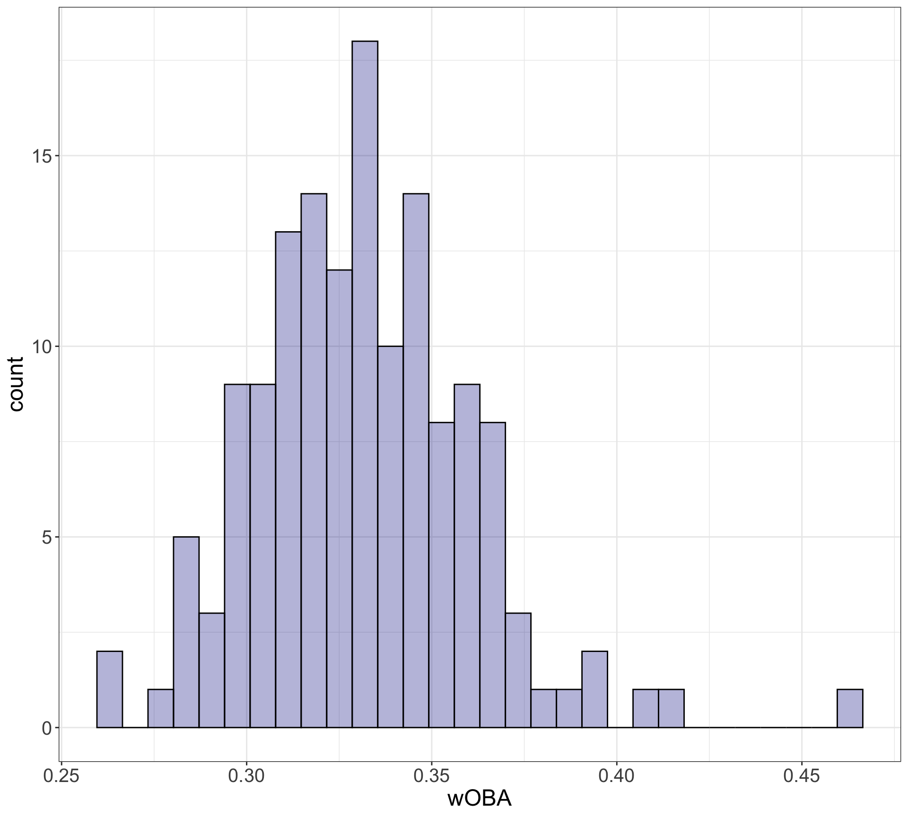
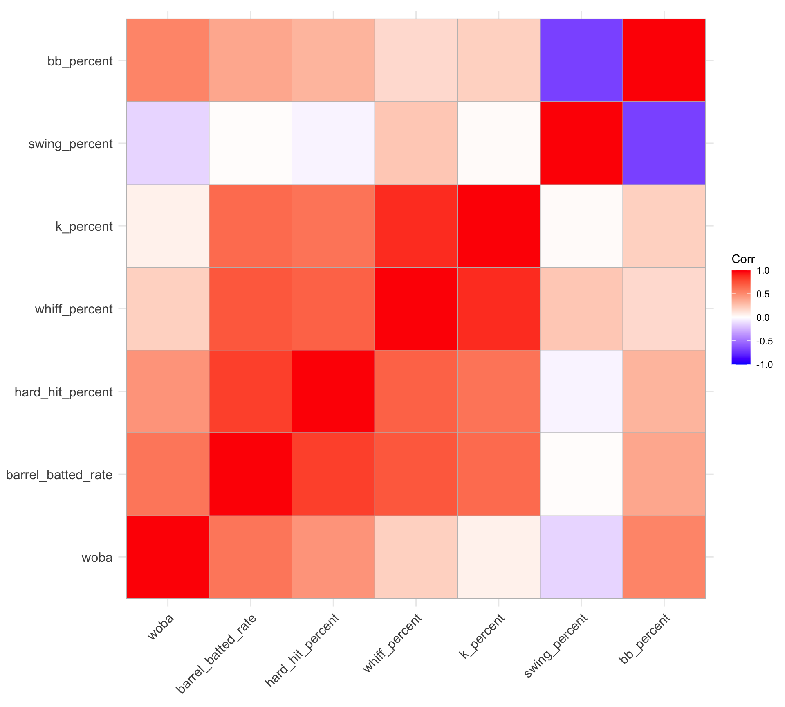
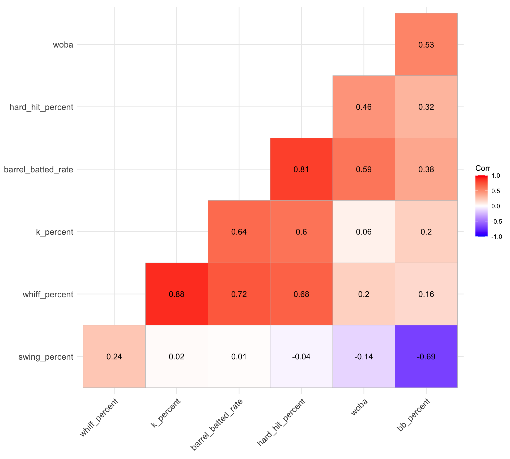
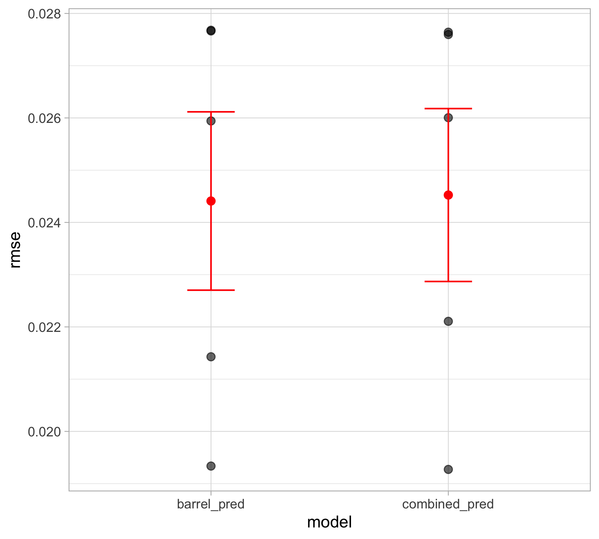

Supervised learning: Intro to Variable Selection
The setting
Suppose we wish to learn a linear model. Our estimate (denoted by hats) is
\[\hat Y = \hat \beta_0 + \hat \beta_1 X_1 + \dots + \hat \beta_p X_p\]
Why would we wish to select a subset of the \(p\) variables?
. . .
- To improve prediction accuracy
- Eliminating uninformative predictors can lead to lower variance in the test-set MSE, at the expense of a slight increase in bias
. . .
- To improve model interpretability
- Eliminating uninformative predictors is obviously a good thing when your goal is to tell the story of how your predictors are associated with your response.
- Think of multiple linear regression interpretation: Holding \(X_2\) , \(X_3\) , … , \(X_p\) constant, each additional unit of \(X_1\) is associated with…
Best subset selection (not recommended)
Start with just null model \(\mathcal{M}_0\) that has no predictors
Fit every possible 1 variable model, save the one with the best results
- Best can be defined with a variety of metrics: e.g. lowest RSS, highest \(R^2\) or adjusted \(R^2\)
Fit every possible 2 variable model, save the one with the “best” results
Repeat this process for all subset sizes \(p\)
Pick the single best model among \(\mathcal{M}_0, \dots, \mathcal{M}_P\)
. . .
This is not typically used in research!
Only practical with a smaller number of variables (10 variables = \(2^{10} = 1024\) models)
Arbitrary way of defining best and ignores prior knowledge about potential predictors
Stepwise selection (not recommended)
Forward stepwise selection
Start with the null model, containing no predictors
Fit all one-predictor models: select the predictor whose addition to the model produces the smallest p-value.
Add that predictor to the model
From the remaining predictors, fit all models obtained by adding one additional predictor to the current model. Select the predictor whose addition gives the smallest p-value.
Repeat this process until a stopping criterion is met (e.g. the smallest p-value among the remaining candidate predictors exceeds 0.05, the improvement in AIC/BIC is no longer sufficient)
. . .
Backward stepwise selection has a similar process, you just start with all predictors in the model.
. . .
Both algorithms are greedy: make short-sighted, localized decisions that maximize the model’s immediate fit, without considering how that choice will impact the final model in later stages.
Instead, use the shoe leather approach
Variable selection is a difficult problem! Like much of statistics, there is no one right answer
Idea: use your brain instead of algorithms
Justify which predictors used in modeling based on:
- domain knowledge
- context
- extensive EDA
- model assessment based on holdout predictions
Confounding variables
A confounding variable (or lurking variable) is one that is influences both the treatment/predictor of interest (\(X\)) and the outcome (\(Y\))
When a confounder is present, we may observe a spurious correlation between the \(X\) and \(Y\), even if no direct causal relationship exists
- If a causal relationship does exist, the presence of the confounder can lead us to overestimate or underestimate the true effect.
So, it is important to stop and think about whether there are confounding variables which could be explaining the association instead
Confounding variables (example)

In reality, there is no causal relationship between ice cream sales and shark attacks: changing one will not cause a change in the other. Temperature influences both variables simultaneously.
Correlation and causation

Confounding variables (baseball)
Does a pitcher with a high groundball rate inherently prevent more runs?

Including quality of infield defense in the model may help to reduce bias in estimating the relevent effect of groundball rate.
In summary, variable selection is complicated!

Covariance and correlation
Covariance is a measure of the linear dependence between two variables
Measures how two variables change together, indicating the direction of their relationship
Independence implies zero covariance (knowing the value of one tells you nothing about the probability distribution of the other)
Zero covariance does not guarantee independence: only means there is no linear correlation between the variables
. . .
Correlation is a normalized form of covariance, ranges from -1 to 1
-1 means one variable linearly decreases absolutely in value while the other increases in value
0 means no linear dependence
1 means one variable linearly increases absolutely while the other increases
Data: MLB batting
A subset of batting statistics for all MLB players with at least 500 plate appearances in 2025. Obtained from Baseball Savant.
library(tidyverse)
batting_2025 <- read_csv("https://raw.githubusercontent.com/36-SURE/2026/main/data/player_hitting_2025.csv")Modeling MLB wOBA
batting_2025 |>
ggplot(aes(x = woba)) +
geom_histogram(color = "black",
fill = "darkblue",
alpha = 0.3) +
theme_bw() +
labs(x = "wOBA")+
theme(axis.text = element_text(size =15),
axis.title =element_text(size = 18))
Correlation matrix of wOBA and candidate predictors
Interested in relationship between batting statistics with wOBA
View the correlation matrix with
ggcorrplot
library(ggcorrplot)
mlb_model_data <- batting_2025 |>
dplyr::select(woba,
barrel_batted_rate,
hard_hit_percent,
whiff_percent, k_percent, swing_percent, bb_percent)
mlb_cor_matrix <- cor(mlb_model_data)
ggcorrplot(mlb_cor_matrix)
Customize the appearance of the correlation matrix
Avoid redundancy by only using one half of matrix with type
Add correlation value labels using lab (but round first!)
Can arrange variables based on clustering…
round_cor_matrix <- round(cor(mlb_model_data), 2)
ggcorrplot(round_cor_matrix,
hc.order = TRUE,
type = "lower",
lab = TRUE)
Building a linear regression
Let’s say we are interested in understanding the relationship between quality of contact and wOBA. We might measure quality of contact in two ways:
hard_hit_percent: ball struck at least 95 mphbarrel_batted_rate: ball struck at least 98 mph with a launch angle between 26-30 degrees. As exit velocity increases, the launch angle range widens.- A barrel is a subset of a hard hit
library(gtsummary)
hh_mod <- lm(data= mlb_model_data, woba ~ hard_hit_percent)
tbl_regression(hh_mod, estimate_fun = label_style_sigfig(digits = 3))| Characteristic | Beta | 95% CI | p-value |
|---|---|---|---|
| hard_hit_percent | 0.002 | 0.001, 0.002 | <0.001 |
| Abbreviation: CI = Confidence Interval | |||
barrel_mod <- lm(data= mlb_model_data, woba ~ barrel_batted_rate)
tbl_regression(barrel_mod, estimate_fun = label_style_sigfig(digits = 3))| Characteristic | Beta | 95% CI | p-value |
|---|---|---|---|
| barrel_batted_rate | 0.004 | 0.003, 0.005 | <0.001 |
| Abbreviation: CI = Confidence Interval | |||
Adding both variables to the regression
combined <- lm(data = mlb_model_data, woba ~ barrel_batted_rate + hard_hit_percent)
tbl_regression(combined, estimate_fun = label_style_sigfig(digits = 3))| Characteristic | Beta | 95% CI | p-value |
|---|---|---|---|
| barrel_batted_rate | 0.004 | 0.003, 0.006 | <0.001 |
| hard_hit_percent | 0.000 | -0.001, 0.001 | 0.5 |
| Abbreviation: CI = Confidence Interval | |||
After accounting for Barrel%, Hard Hit% provides almost no additional information about wOBA.
- The coefficient in multiple regression represents the effect of a predictor holding the other predictors fixed.
- What does it mean to compare two hitters with the same Barrel% but different Hard Hit%?
What do we do about this?
Inference: if we are trying to understand does the quality of contact affect wOBA? we can roughly consider Barrel% and Hard Hit% as two measures of the same underlying construct
Fair to remove one in this scenario, as
“holding Barrel% fixed while changing Hard Hit%” is not practical in baseball
Hard Hit% is not necessarily a confounding variable, rather, Barrel% is a subset of Hard Hit%
. . .
Prediction: if we are trying to build a linear regression model to predict a new player’s wOBA from their Hard Hit% and Barrel%, it could go either way
Collinearity is a problem insofar as it creates high prediction variance
But maybe, given Barrel%, Hard Hit% still explains a enough variance in the outcome to counteract this
One option is to use cross validation to see!
General notes about collinearity to keep in mind
Courtesy of Alex Reinhart’s regression notes:
Be very careful with the interpretation of your coefficients
\(\beta_1\) is the change in the mean of \(Y\) when increasing \(X_1\) while holding \(X_2\) fixed.
If \(X_1\) and \(X_2\) have a strong correlation, that may be very different than the change in the mean of \(Y\) when increasing \(X_1\) without holding \(X_2\) fixed.
The question to ask when we have collinearity is “Have we chosen the correct predictors for the research question?”
If we have, there is little to be done; if we have not, we can reconsider our choice of predictors and perhaps eliminate the collinear ones.
In other words, if you have a confounding variable that is collinear with your variable of interest, leave it in the model and move on.
Cross-validation (review)
- Randomly split the observations into \(K\) (roughly) equal-sized folds (usually \(K=5\) or \(K=10\))
. . .
For each fold \(k=1,2,\dots,K\)
Fit the model on data excluding observations in fold \(k\)
Obtain predictions for fold \(k\)
Compute performance measure (e.g. MSE) for fold \(k\)
. . .
Aggregate performance measure across folds
- e.g., compute average MSE, including standard error
. . .
We can justify model choice (e.g. model selection/comparison, variable selection, tuning parameter selection) using any performance measure we want with CV
. . .
Why do we typically choose \(K=5\) or \(K=10\)? Think about: What’s the smallest and largest \(K\) could be? And what’s the trade-off?
Some additional notes on cross-validation
- Recall that the typical cross-validation procedure randomly assigns individual observations to different folds
. . .
- In more complex data settings (e.g. correlated data, nested data), figuring out the appropriate way to split the observations into folds can require careful thoughts
. . .
- For example, if the data are spatially or temporally dependent, we can’t simply assign individual observations to folds (which may result in data leakage)
. . .
- To preserve any dependence structure of the data, we can assign groups/blocks of observations together into different folds
Implementing cross-validation: fold assignment
Perform 5-fold cross-validation to assess model performance
Create a column of test fold assignments to our dataset with the
sample()functionAlways remember to
set.seed()prior to performing cross-validation
set.seed(2026)
N_FOLDS <- 5
batting_2025 <- batting_2025 |>
mutate(fold = sample(rep(1:N_FOLDS, length.out = n())))
table(batting_2025$fold)
1 2 3 4 5
29 29 29 29 29 Model comparison based on out-of-sample performance
Function to perform cross-validation
batting_cv <- function(x) {
# get test and training data
test_data <- batting_2025 |> filter(fold == x)
train_data <- batting_2025 |> filter(fold != x)
# fit models to training data
barrel_fit <- lm(woba ~ barrel_batted_rate, data = train_data)
combined_fit <- lm(woba ~ barrel_batted_rate + hard_hit_percent, data = train_data)
# return test results
out <- tibble(
barrel_pred = predict(barrel_fit, newdata = test_data),
combined_pred = predict(combined_fit, newdata = test_data),
test_actual = test_data$woba,
test_fold = x
)
return(out)
}batting_test_preds <- map(1:N_FOLDS, batting_cv) |>
bind_rows()Model comparison based on out-of-sample performance
Compute RMSE across folds with standard error intervals
batting_test_summary <- batting_test_preds |>
pivot_longer(barrel_pred:combined_pred, names_to = "model", values_to = "test_pred") |>
group_by(model, test_fold) |>
summarize(rmse = sqrt(mean((test_actual - test_pred)^2)))
batting_test_summary |>
group_by(model) |>
summarize(avg_cv_rmse = mean(rmse),
sd_rmse = sd(rmse),
k = n()) |>
mutate(se_rmse = sd_rmse / sqrt(k),
lower_rmse = avg_cv_rmse - se_rmse,
upper_rmse = avg_cv_rmse + se_rmse) |>
select(model, avg_cv_rmse, lower_rmse, upper_rmse)# A tibble: 2 × 4
model avg_cv_rmse lower_rmse upper_rmse
<chr> <dbl> <dbl> <dbl>
1 barrel_pred 0.0244 0.0227 0.0261
2 combined_pred 0.0245 0.0229 0.0262Visualizing model performance results
batting_test_summary |>
ggplot(aes(x = model, y = rmse)) +
geom_point(size = 4, alpha=0.6) +
stat_summary(fun = mean, geom = "point",
color = "red", size = 4) +
stat_summary(fun.data = mean_se, geom = "errorbar",
color = "red", width = 0.2)
Whether or not you include Hard Hit%, model performance is essentially the same
If anything, performance is slightly better without Hard Hit%
We will discuss more about prediction and correlated covariates tomorrow!
Data analysis workflow: before looking at data
This data analysis workflow is adapted from Valérie Ventura’s 36-617 class.
Formulate a question. Some of you have very well-defined projects, some not quite as much. This step can take a while!
Determine what sort of analysis is needed: are we doing inference? Prediction?
Identify the data you’d want to have to answer your question: this will not only help you determine the analysis you want to do, but also the potential limitations of your data.
Understand the data you do have.
- Research each variable to make sure you know exactly what it means, whether you expect it to take discrete or continuous values, etc.
- Identify your response variable: sometimes there are several available response variables. Which one will you work with? Why?
Data analysis workflow: before looking at data
Identify covariate(s) of main interest.
Identify covariates that also (partially) cause the response variable.
- These may explain variability in the response variable or be confounding variables.
Do you anticipate having to create new covariates? What about an interaction in your model?
Think about limitations: will your analysis be limited in any way because the data is insufficient, maybe because it contains the wrong variables, it is missing variables, etc.?
Data analysis workflow: before looking at data
- Go back to question 1 and finalize your analysis plan: what type of model will you fit? Note: several analyses may be required to answer fully the question(s) of interest.
Why is your model(s) appropriate for the problem?
For simplicity and explanability purpose? (Why do you prefer a simpler model over a black box?)
For complexity and flexibility purpose? (Why do you prefer a black box over a simpler model?)
How do you evaluate your model?
Do you compare it with other models? Do you have a baseline model?
Do you compare it with alternative specifications (e.g. different set of predictors)?
Data analysis workflow: now look at the data!
One-dimensional EDA: create plots and summaries of all relevant variables, look for missing data and outliers.
Two-dimensional EDA: plot all important variables against each other.
- This will help you identify an appropriate regression function.
- It may also reveal weird points not obvious in the 1D analysis.
Create any new covariates you previously identified.
Try to answer your question of interest through plots. This will help inform and justify your modeling choices.
You are now ready to start modeling!
Make sure to report uncertainty for whatever you’re estimating
Don’t just say “we find a statistically significant association between Y and X…”
What do those coefficient estimates tell you? Interpret in context
- How large/small is the effect size? Consider practical significance in addition to statistical significance
What’s the margin of error?
Did the model also adjust for other potential meaningful predictors?
. . .
This also applies to (\(k\)-fold) cross-validation results
Report the average of the performance measure (e.g. MSE, accuracy, etc.) across the \(k\) test set along with standard errors
In some cases, all \(k\) folds yield similar results, but in other cases, the results are vastly different across the folds
Without some indication of uncertainty, no one will have a clue of how reliable your results are
Appendix: making tables
library(gt)
library(broom)
all_fit |>
tidy() |>
gt() |>
fmt_number(columns = where(is.numeric), decimals = 2) |>
cols_label(term = "Term",
estimate = "Estimate",
std.error = "SE",
statistic = "t",
p.value = md("*p*-value"))| Term | Estimate | SE | t | p-value |
|---|---|---|---|---|
| (Intercept) | 40.46 | 1.35 | 29.89 | 0.00 |
| RottenTomatoes | 0.39 | 0.02 | 24.69 | 0.00 |
| TheatersOpenWeek | 0.00 | 0.00 | −5.44 | 0.00 |
| OpeningWeekend | −0.11 | 0.04 | −3.16 | 0.00 |
| Budget | 0.02 | 0.01 | 1.45 | 0.15 |
| DomesticGross | 0.07 | 0.01 | 5.52 | 0.00 |
| ForeignGross | 0.00 | 0.00 | 0.84 | 0.40 |
Appendix: gtsummary
library(gtsummary)
all_fit |>
tbl_regression() |>
bold_p() |>
bold_labels()| Characteristic | Beta | 95% CI | p-value |
|---|---|---|---|
| RottenTomatoes | 0.39 | 0.36, 0.43 | <0.001 |
| TheatersOpenWeek | 0.00 | 0.00, 0.00 | <0.001 |
| OpeningWeekend | -0.11 | -0.19, -0.04 | 0.002 |
| Budget | 0.02 | -0.01, 0.04 | 0.15 |
| DomesticGross | 0.07 | 0.04, 0.09 | <0.001 |
| ForeignGross | 0.00 | -0.01, 0.01 | 0.4 |
| Abbreviation: CI = Confidence Interval | |||
Appendix: a gt example
# https://bradcongelio.com/nfl-analytics-with-r-book/04-nfl-analytics-visualization.html
cpoe <- read_csv("http://nfl-book.bradcongelio.com/pure-cpoe")
cpoe_gt <- cpoe |>
select(passer, season, total_attempts, mean_cpoe) |>
gt(rowname_col = "passer") |>
fmt_number(columns = c(mean_cpoe), decimals = 2) |>
data_color(columns = c(mean_cpoe),
fn = scales::col_numeric(palette = c("#FEE0D2", "#67000D"), domain = NULL)) |>
cols_align(align = "center", columns = c("season", "total_attempts")) |>
tab_stubhead(label = "Quarterback") |>
cols_label(season = "Season",
total_attempts = "Attempts",
mean_cpoe = "Mean CPOE") |>
tab_header(title = md("**Average CPOE in Pure Passing Situations**"),
subtitle = md("*For seasons between 2010 and 2022*")) |>
tab_source_note(source_note = md("Example adapted from the book<br>*An Introduction to NFL Analytics with R*")) |>
gtExtras::gt_theme_espn()
# gtsave(cpoe_gt, "cpoe_gt.png")Appendix: a gt example
| Average CPOE in Pure Passing Situations | |||
| For seasons between 2010 and 2022 | |||
| Quarterback | Season | Attempts | Mean CPOE |
|---|---|---|---|
| P.Rivers | 2013 | 291 | 10.89 |
| P.Mahomes | 2018 | 261 | 9.29 |
| A.Rodgers | 2020 | 242 | 8.57 |
| R.Wilson | 2013 | 231 | 8.47 |
| R.Wilson | 2018 | 277 | 8.45 |
| D.Brees | 2011 | 311 | 8.29 |
| M.Ryan | 2018 | 315 | 8.23 |
| M.Ryan | 2012 | 303 | 8.11 |
| R.Wilson | 2015 | 279 | 7.52 |
| J.Burrow | 2021 | 343 | 7.12 |
| Example adapted from the book An Introduction to NFL Analytics with R |
|||